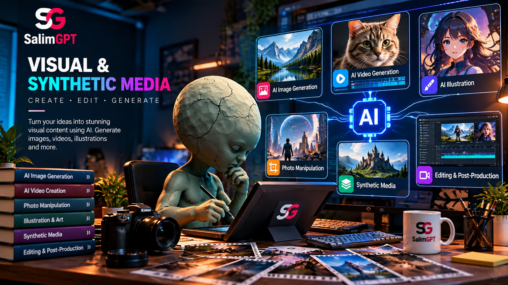

Documentary & Archival Images
Photographs, recordings and archival material can provide direct historical or documentary context when their origin and relevance are understood.
HOW WE WORK
Documentary visuals do more than decorate a story. Images, graphics, archival material, maps, reconstructions and synthetic media can all shape how audiences understand evidence, chronology, place, identity and events.
SalimGPT may use AI-assisted or synthetic media where it supports the documentary purpose, but visual choices remain subject to human creative direction, factual context, editorial review and final approval.

CORE PRINCIPLE
A documentary image can create a factual impression even when no explicit statement accompanies it. A photograph may imply location, a reconstruction may imply direct observation and a generated visual may appear to show something that never existed as a recorded image.
Visual review therefore considers not only whether an asset is technically well produced, but also what audiences are likely to understand from seeing it in a particular context.
Where the distinction between documentary evidence and illustration matters, that distinction should remain clear enough for the audience to understand the work accurately.
VISUAL MATERIAL
No single visual standard applies identically to every documentary asset. The source, purpose and factual role of the material determine what needs to be reviewed.
Photographs, recordings and archival material can provide direct historical or documentary context when their origin and relevance are understood.
Maps, charts and diagrams can explain evidence, scale, geography and relationships but should accurately reflect the underlying information.
Original artwork can explain ideas or represent subjects for which direct documentary imagery is unavailable or unsuitable.
Recreated scenes can help audiences understand events, places or processes that were not directly recorded.
Synthetic imagery can support illustration, concept development or reconstruction under human creative and editorial direction.
Cropping, compositing, enhancement and other transformations can affect the factual impression created by otherwise authentic material.
AUTHENTICITY & CONTEXT
Authentic source material can still become misleading if it is assigned to the wrong place, time, event or person. Synthetic material can also be editorially appropriate when it is clearly used as illustration or reconstruction rather than presented as direct evidence.
Review therefore considers both what the visual actually is and what the surrounding documentary context causes the audience to believe it is.
SYNTHETIC MEDIA
AI-generated images, video, voice or other synthetic media can support documentary production, but generated output does not independently establish that an event, person, place or historical scene existed in the form shown.
Synthetic visuals can help represent abstract ideas, environments or explanatory concepts that need visual support.
Generated scenes can help visualize historical or unrecorded situations when they remain distinct from authentic documentary footage.
AI can assist concept development, backgrounds, design exploration or other visual-production tasks under human direction.
Synthetic output remains subject to review for factual implications, appropriateness, context and creative purpose.
RECONSTRUCTION
Many documentary subjects involve events for which no photograph or video exists. Reconstruction can help explain those events visually, but it introduces a distinction between documented evidence and a later representation of that evidence.
Editorial review considers whether the reconstruction is consistent with the available information and whether its presentation could cause audiences to mistake it for original footage or photography.
What sources inform the reconstruction?
Which visual details are documented and which are interpretive?
Could viewers mistake the reconstruction for an authentic record?
Is additional explanation needed for accurate understanding?
EDITING & TRANSFORMATION
Cropping, color adjustment, cleanup, compositing, enhancement and other visual transformations can be legitimate production techniques. Their editorial effect, however, depends on what changes and how the final visual is used.
Review considers whether the transformation changes the factual meaning of the source material or creates an implication that the original evidence does not support.
MAPS, CHARTS & GRAPHICS
A visual representation can make complex information easier to understand, but design decisions can also exaggerate differences, hide uncertainty or remove important definitions.
Axes, proportions and visual scale should not create a stronger difference than the data supports.
Timelines and trend graphics should represent the correct period and sequence of events.
Units, categories, definitions and relevant source information should be clear enough for interpretation.
A graphic should not suggest precision or certainty that the underlying evidence does not provide.
DISCLOSURE & AUDIENCE CONTEXT
Not every routine digital production technique requires a separate explanation. Context becomes more important when an audience could reasonably mistake generated, reconstructed or substantially transformed media for a direct record of reality.
The form of that context can vary with the documentary, platform and visual material being used.
HUMAN CREATIVE DIRECTION
Human creative direction determines why a visual is needed, which form is appropriate, what should be emphasized, how generated material is revised and how the final sequence supports the documentary narrative.
AI-assisted production therefore operates within human editorial and creative decisions rather than replacing them.
REVIEW CHECKPOINTS
A visual may look appropriate on its own but create a different meaning when combined with narration, captions, music, editing or surrounding scenes.
Identify the origin and evidentiary role of relevant documentary material.
Confirm that time, location, identity and surrounding context are represented appropriately.
Review whether editing or generation changes the factual impression of the material.
Ensure labels and captions describe the visual without overstating what it establishes.
Examine the meaning created when the visual is placed beside narration or other media.
Confirm that the finished visual presentation is suitable for publication within the documentary.
HUMAN-LED, AI-ASSISTED
AI tools may contribute to visual development, reconstruction, illustration and other production tasks, but generated output can introduce inaccuracies, unintended details or misleading impressions.
Human review remains responsible for deciding whether generated media is appropriate, how it is revised, where it appears and whether the final presentation should be published.
HOW WE WORK
How research, evidence and storytelling connect.
How visual work connects with the wider production workflow.
How AI supports production without holding editorial authority.
How factual claims and visual implications are reviewed.
Principles guiding factual and editorial presentation.
How human creative direction shapes the final documentary.